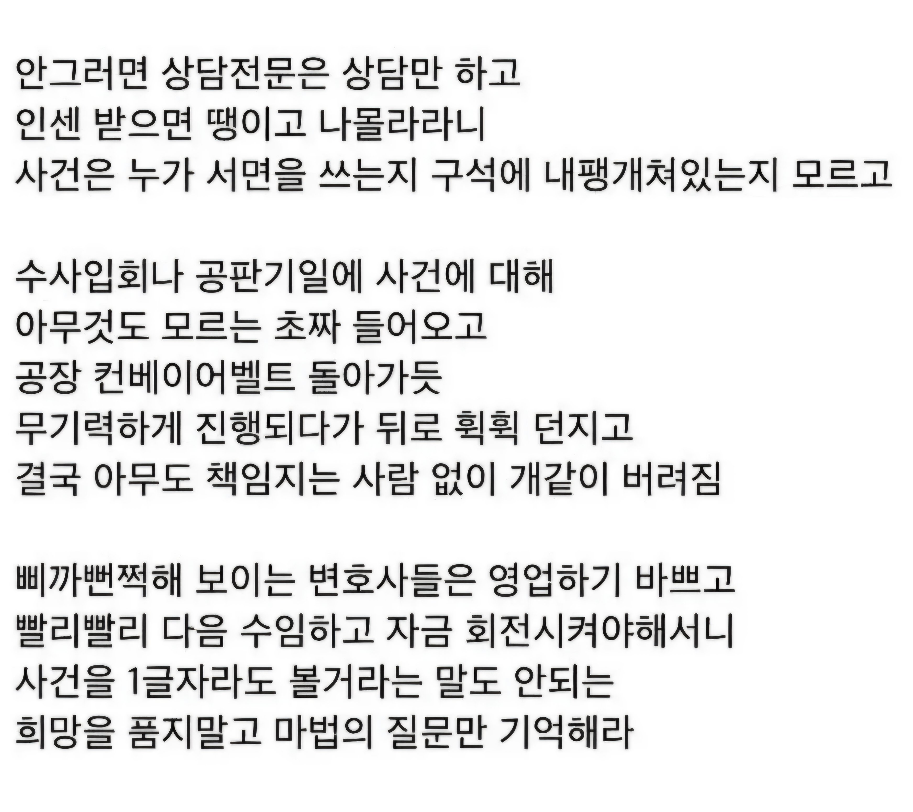

변호사 복불복 걸리면 답이없음

변호사 복불복 걸리면 답이없음
출처에서 신뢰도 급상승
내 직접적인 사건은 아니지만, 민사 소송 관련 거의 대리인 자격으로 2건(1건은 금액도 수십억 단위, 당사자 30명 수준) 정도 관여해 본 결과,
겨우 2건 소송에서도 말로만 듣던 양아치 변호사와 계약할뻔한 경우가 있어서
법률시장에는 상당히 많은 비율로 양아치들이 존재할거란 생각이 든다.
ㄹㅇ 괜히 변호사가 아닌게 남탓 진짜 잘 하드라
ai로 변호사 대체한다는 생각을 버리고 도와준다고 생각하고 써라
변호사 상담받거나 자료 정리해서 갈때도 ai로 정리해서 변호사 한테 가져가서 상담받는게 나음
그리고 소액사건은 걍 ai만 써서 처리하고. 형사사건이나 진짜 중요한 사건은 결국 변호사 써야하는데
그때도 ai 쓰면 효율이 좋아진단거임. 왜냐면 니 입장을 ai로 정리할 수 있거든
ai한테 100%다 맡기면 나중에 피본다